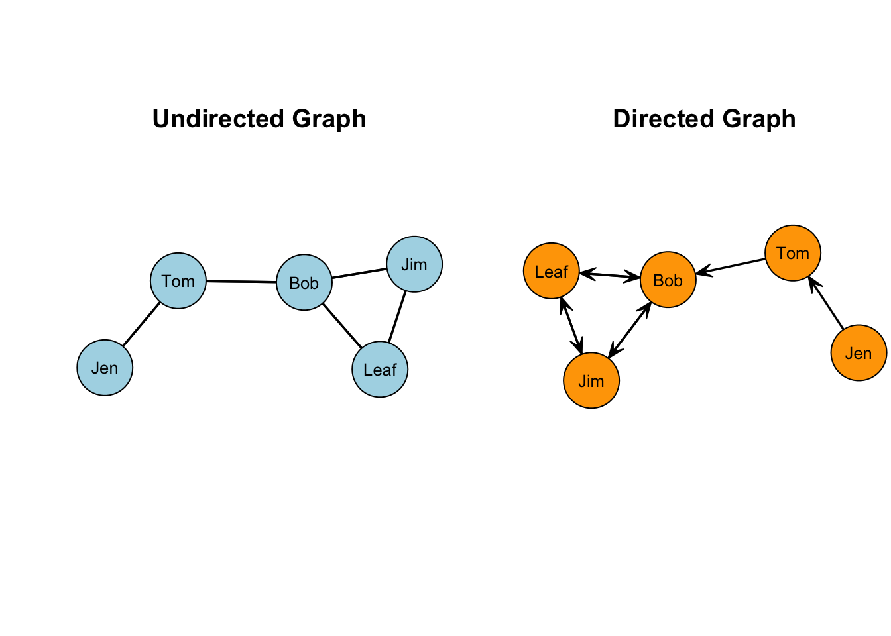

Network Data Structures
Network Data Structures
Learning Goals
Be able to answer these questions:
How can we represent networks using graphs and graph notation?
How can we represent undirected and directed networks using matrices?
Motivating Problem
Review the figure below, and consider the following problem: Devise a route in which you could cross all seven bridges.

Now, consider a different problem: Devise a route in which you could cross all seven bridges, but crossing each of the seven bridges only once.
Did you figure it out?
Konigsberg Bridge Problem
Leonard Euler worked on this problem in the mid 18th century, eventually representing the solution with a set of points and lines. For a great overview fo the problem (and some interesting history), check out this video.
Recall the discussion from LINK TO LECTURE about the importance of conceptualizing and operationalizing concepts in network science. Graph theory provides a foundation for operationalizing concepts of interest among network scientists.
Graph Notation
Definition of a graph is \(G = (N,L)\), where \(N = {n_1, n_2..., n_g}\) defines the set of nodes and \(L = {l_1, l_2..., l_L}\) defines the set of edges. This definition simply states that there are \(N\) nodes and \(L\) edges in a graph.
Two nodes, \(n_i\) and \(n_j\) are called adjacent if the line \(l_k = (n_i, n_j)\). What this means is that in the graph, there exists a line between nodes i and j.
Node Sets
Undirected, Binary Graphs
Recall the discussion from LINK TO LECTURE about the directionality of graphs. Edges can be either undirected or directed. In an undirected graph, the order of the nodes does not matter. In other words, \(l_k = (n_i, n_j) = (n_j, n_i)\). This is to say that if there exists a line between nodes i and j, then a line exists between j and i. (This may seem obvious, but will make more sense why we talk about it this way when we get to directed graphs.)

Directed, Binary Graphs
In a directed graph, the order of the nodes does matter. Specifically, \(l_k1 = (n_i, n_j) \neq (n_j, n_i) = l_k2\).
Adjacency
Two nodes, \(n_i\) and \(n_j\) are adjacent if the link \(l_k = (n_i,n_j)\). This is to say that in the graph, there exists an edge between nodes i and j. For a set of relations, \(X\), we can define a matrix which represents these relations. We commonly use an adjacency matrix, where each node is listed on the row and the column. The \(i_{th}\) row and the \(j_{th}\) column of \(X_{ij}\) records the value of a tie from i to j. In this approach, \(X\), can be thought of as a variable. The presence or absence of values in the cells represent variation. THIS WOUDL BE A GOOD SPOT FOR THAT ONE SLIDE FROM THE INTRO LECTURE THAT YOU WERE NOT SURE WHAT TO DO WITH.
Here are some important definitions that we will come across as we talk about network data structures:
- Scalar: a single number
- Column vector: a column of numbers
- Row vector: a row of numbers
- Matrix: a rectangular array of numbers
- Order: number of rows and columns defining the matrix
- Square matrix: number of rows and columns of matrix are equal
Undirected, Binary Graphs
The undirected network we showed above is called a sociogram:
We can represent the graph as a matrix using an adjacency matrix (sometimes called a sociomatrix):

In most instances, we do not allow self-nominations, so the diagonal of the matrix is usually undefined or set to zero. In networks that allow self-nominations, you can have values on the diagonal. These are refered to as loops.

In the first row, i sends to the second row only: \(X_{12}=1; X_{15}=0\) (where \(X_{ij}\) refers to the ith row and the jth column of the matrix).

Since this graph is undirected, it is symmetric about the diagonal. This means that \(X_{ij} = X_{ji}\) or that the jith column is the transposition of the ith row, as shown in the figure.

Now, what does the rest of the matrix look like? Fill in the values in the matrix based on the graph.

Done? It should look like this:

Note that I added zeros to the diagonal. As we will see later, we want these values defined for working with the matrix in a software program.
The highlighted section here is called the lower triangle of the matrix. The sum of the lower triangle should equal the number of edges in the graph.

The other highlighted section here is called the upper triangle of the matrix. The sum of the upper triangle should also equal the number of edges in the graph.

Alternatively, we could sum all the elements and divide by 2.
Directed, Binary Graphs
In a directed graph, the order of the nodes does matter. Specifically, \(l_k1 = (n_i, n_j) \neq (n_j, n_i) = l_k2\).
What is different in our matrix when the graph is directed?
In the first row, i sends to the second row: \(X_{12}=1\).

But, in the second row, j does not send \(X_{21}=0\). The Jen/Tom dyad is asymmetric. Directed graphs permit this asymmetric because \(l_k1 = (n_i, n_j) \neq (n_j, n_i) = l_k2\).

What about the Leaf/Bob dyad? Is it asymmetric or is it symmetric?

Now, what does the rest of the matrix look like? Fill in the values in the matrix based on the graph.

Done? It should look like this:

Note that, because we are allowing directionality to matter, the total number of edges in the network is just the sum of the entire matrix.